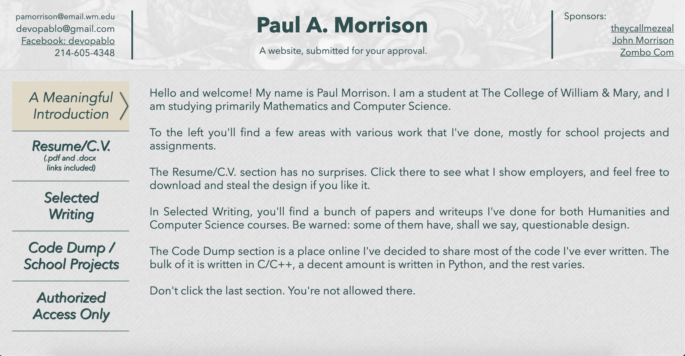

The Making of This Website (a docudrama is forthcoming)
We're going to talk about the website you're viewing now, the kind of work I put into it, what I learned along the way, and maybe have a few laughs at my expense. There are many to be had.
Phase 1: Something Happens (prepare yourself for epic mediocrity)
Roughly 3 weeks before the time of this writing, in late May '19, I decided that I needed to learn some HTML and CSS and learn to do proper web development so that I could a) learn a valuable skill and b) actually have a website. I didn't have one at all at the time, and LinkedIn is lame (I apologize if you like it, just an opinion), and Facebook is terrible (I'm not apologizing for this, because it's objectively true), and I really didn't want to teach myself bad habits with one of those site builders.
The first real step was to register a domain, set up a redirect, and have at least SOMEthing that existed at the URL attached to the domain I purchased (pamorrison.com, in case that wasn't clear), because you can't have people hijacking things. Not good for business. I'm not running a business on this site, but you get the point.
Enter namecheap, a company that, in part, acts as a domain registrar. I paid for a domain, set up all the things, put the stuff on the GitHub, bing bang boom, I got a site.
I'm sure you're highly anticipating the inaugural version of my site right now. The prototype, the genesis, the birth of my mind's eye. Await no further!
HERE IT IS!

Yeah, that's all. That was the whole site. I think that link at the bottom was to another page having something to do with an exercise from a book I was using, which I'll talk about in a bit. I took a screenshot and deleted the HTML file after 4 days. I'm not applying any style to that image either, because it doesn't deserve it. It is my shame.
Moving on...
Phase 2: A Challenger Appears (and wins, because duh)
Thanks to a friend of mine named Adam, whose site is linked in the footer (theycallmezeal), I had access to one of those "you've never programmed anything before" types of introductory books to learn HTML and CSS from. It's from the "Head First" series, which is similar to the "Complete Idiot's Guide To" and "For Dummies" books. The book I used was the 2nd edition, published in September 2012, shortly after the HTML5 standard was released, so most of the information in the book is still relevant today, even though the book was going on 7 years old at the time.
So I got to work, and after 4 days, I had constructed roughly 30 pages of HTML both following exercises from the book and pages for my own site.
Here's the front page of the SECOND attempt at a website:

I mean...it's not a BIG yikes. But seriously, what the heck was I thinking with that banner image? And that weird texture? Ugh. Regardless, it should look familiar. I liked the structure of having a banner, a left menu bar that doesn't stick, and a main content window, and that's exactly how the current version is constructed, with the added footer as well.
In my mind, having the banner be on every page and the menu bar on every primary page was a good way to make a site that was easy to build but consistent- and clean-looking.
To be completely honest, I was so over the moon with having created the architecture of the site, the flaws in presentation didn't really hit me right away, but eventually I decided that I didn't want my site to be "cool", so I didn't need a "cool" banner image. What I needed was a site that was less "middle schooler in the 90s" and more professional-looking.
And that brings us to...
Phase Three: An All Right Site (content...? who needs content?)
I should take a moment to give a shoutout. While developing the third version of my site, W3Schools.com was an invaluable tool to use alongside both the Head First book I was using and my friend Adam, whose brain I was picking like a vineyard. I learned a few techniques that allowed me to develop a lot of what you see in the current (at the time of this writing, fourth) version.
I'll share a screenshot from the third version now and describe a few standard techniques I learned about that really boosted the warmth of the presentation going from the second phase to the the third phase.
Are you excited? I am. Here you go:
BAM. YOU SMELL WHAT I'M COOKIN?
Ok, it's not THAT great, but you can probably tell that I decided on a very different aesthetic. Signal boost to William & Mary's website for giving me a lot of visual ideas. It's great to have a template when you're not very savvy with colors. I decided to force myself to use their exact colors, actually, so that I wouldn't let myself get too out there with trying to "wow" my visitors. To this end, I used almost exclusively the hex codes from W&M's University Colors, which are part of the school's Brand Guidelines.
The two primary aspects of CSS that I learned about during this phase that I employed to make the site more inviting to look at were pseudo-classes, specifically :hover, :link, and :visited, along with my favorite visual feature of anything I've encountered so far, the GRADIENT (oooo, aaaa). You can see that I used them both for the menu bar in that screenshot above, and I used the :hover and gradient effects separately in the banner, similar to what you see now.
Two of the major aspects of the way HTML elements function is positioning and flow. To make the banner always stay at the top, I used the "position:sticky" CSS command, and if you wrap all of the content in a <div>, one of the major building blocks of HTML, then it becomes a whole block that you can just stick up top and leave there. This way it ignores the flow of the other elements that normally stack themselves downward.
Well, that's about it for Phase 3, so it's time for...
Final Reflections (don't worry, I'm not gonna get weird)
So here we are, at the current (again, right now it's the fourth) version of the site. I have learned a lot of HTML and CSS in a very short time, and I'm pretty damned proud of how the latest iteration of pamorrison.com turned out. In fact, I'm still a little giddy about owning a piece of my own name. If you haven't tried it, I recommend it. It's very satisfying.
You may have noticed that, although the names of the areas of the site, the declarations of content, didn't change from Phase 2 to Phase 3, they have changed since. I decided I didn't want to just dump random code online, in case I wanted to prevent people from stealing and profiting from it, but I did want to have both my writing and descriptions of projects, so I decided to change up the menu a bit.
One of the things that changed is a subtle detail, but I like the effect, and that's the level of transparency of the banner. It didn't have that in the previous version, so it looked...blockier? Is that a word? Anyway, I think the banner looks nicer now. It being slightly translucent gives a bit of a 3d look and I'm glad I made it a lot shorter to increase the content space.
Another detail that changed was the use of
T R A N S I T I O N S
(hover over the link to get another "oooo, aaaa" moment)
The difference that adding transitions made was a lot more than I realized when I first discovered it. After I added a couple, because they looked nice, the rest of the site without them, specifically links, looked really flat and dull. I've now become a convert. I'm going to transition until I die. I'm not really sure that meant what I meant it to mean. Whatever.
A critical structural change was the main content window itself. It looks fine when you have a menu bar on the left taking up space, but when you scroll down and it disappears, and you're left with lots of white space on the left and much less on the right, it looks awkward. To this end, I decided to make the menu bar AND the main content scale with window width, and I centered the main content window so that there's an even amount of white space on either side, regardless of window size. I don't have a boatload of visual content yet, so I think it's best to keep things easy to read by not having hugely long lines of text.
I think I've talked your ear off enough. I hope you liked this self-indulgent dive into my thoughts and work that went into making this website. As for the other versions of the site, unfortunately they're lost to time. Never again will anyone ever be able to visit them, so you can probably just move on from here, knowing that they died a good, honorable death in sacrifice to the greater cause of me having a decent website.
Yup.
They're gone.
or
(click the links and try not to get lost)